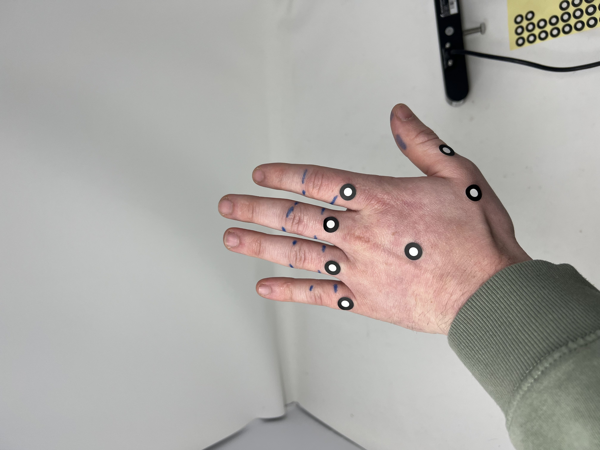
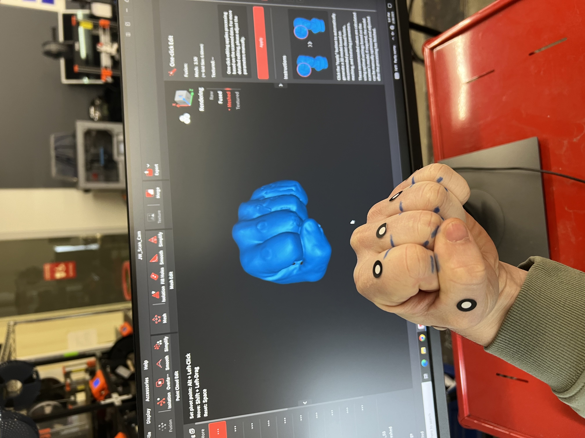
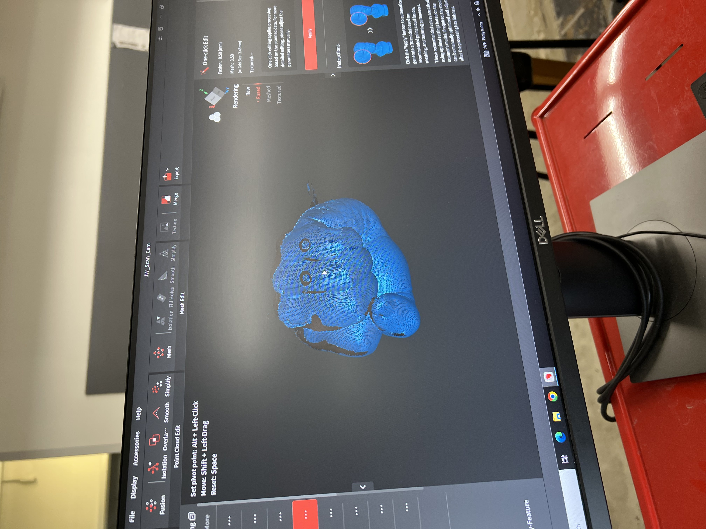
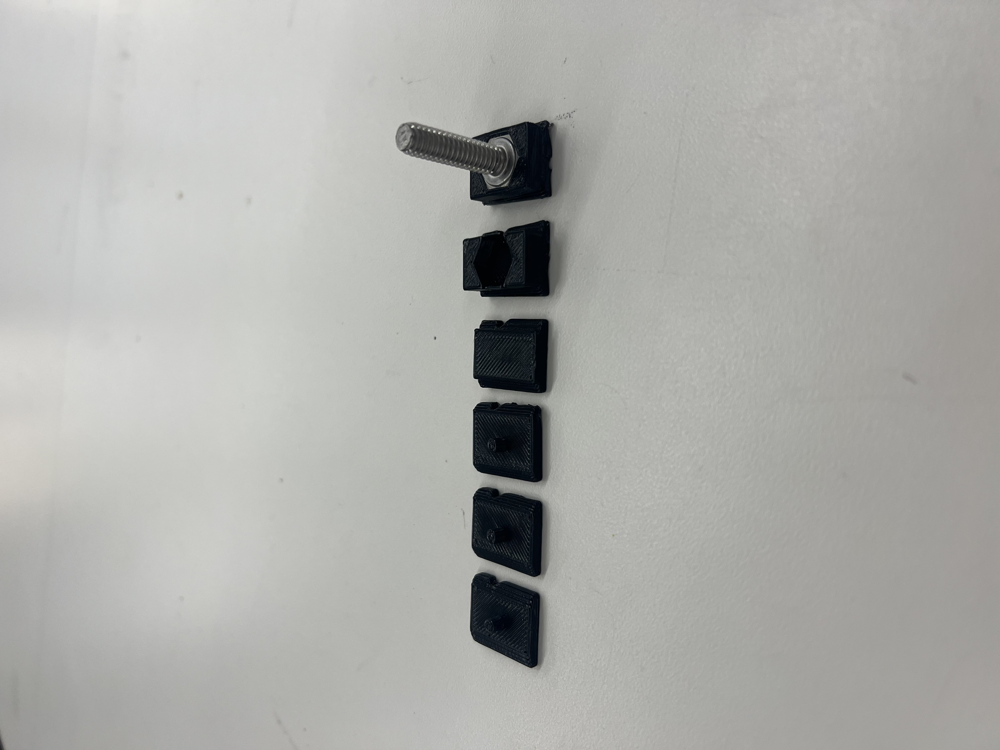
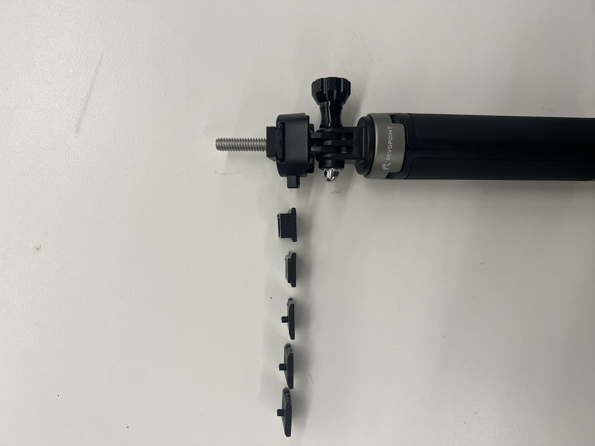
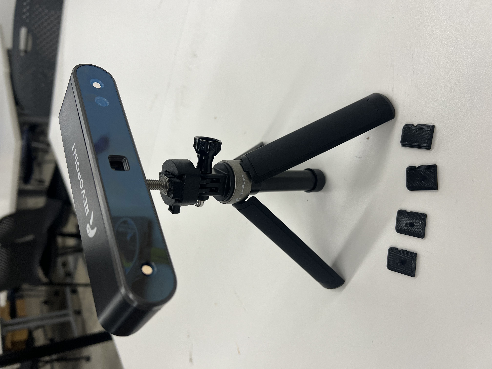

<div class="textcontainer">
<p class="margin"> </p>
<h1>Week 5:"Catch These Hands"</h1>
<br><br>
<h3>Assignment: Model and 3D print something</h3>
<h2><u>Step 1: Setup</u><h2></h4> Based of the name of this week, I wanted to attempt to 3-D scan
my hands, little did I know me "catching my own hands" just meant i was
punching myself in the face. Evidently I was unaware of how such a simple idea
could lead to a learning event i shall soon not forget. </h4>
<br><br>
<h4> Gleefully stumbling into this project I proceeded to play arts-and-crafts
on "These Hands" using markers and pens. Under the advice of Bobby, this would ensure my
hand was in the same position and give the 3-D scanner a better chance of picking
up the intricacies of my hand.
</h4>
<div class="center-row">

<p id="aboutme">
</p>
</div>
<h2><u>Step2: Utter Disappointment</u><h2></h4> Soon I learned that what Bobby meant
by "intricasies" was I was in for a world of hurt. After my first two failures, I learned
I needed to become a contortionist to move the 3-D scanner around my now stationary hand and forearm.
30 minutes in and my body was shaking so much each attempt looked like the one below. </h4>
<br>
<iframe id="vs_iframe" src="https://www.viewstl.com/?embedded&url=https%3A%2F%2Fty-combs1.github.io%2FPS70%2F05_3Ddesign%2FHand_failure.stl&shading=smooth&noborder=yes&bgcolor=transparent&orientation=top" style="border:0;margin:0;width:100%;height:100%;"></iframe>
<br><br>
<h4>I took a short reprieve from the onslaughnt of my own poor decisions to rethink
my life goals while allowing my body to recover before the next round of punishment.
This seemed to be sucessful as the next scans began to come out more sucessfully. </h4>
<div style = "display: flex; justify-content: left; width: 100vw">


</div>
<iframe id="vs_iframe" src="https://www.viewstl.com/?embedded&url=https%3A%2F%2Fty-combs1.github.io%2FPS70%2F05_3Ddesign%2FHand_good.stl&shading=smooth&noborder=yes&bgcolor=transparent&orientation=bottom" style="border:0;margin:0;width:100%;height:100%;"></iframe>
<br><br>
<h2><u>Step 3: Merging</u><h2><h4> As you can see the hand is beginning to take
shape, but large holes were still present because I couldnt get the
full 360deg scan in one take. To solve this I took a few more
scans and managed to merge them. With some post-process editing I was able to
get something that resembled my left hand. </h4>
<iframe id="vs_iframe" src="https://www.viewstl.com/?embedded&url=https%3A%2F%2Fty-combs1.github.io%2FPS70%2F05_3Ddesign%2FHand_final.stl&shading=smooth&noborder=yes&bgcolor=transparent&orientation=top" style="border:0;margin:0;width:100%;height:100%;"></iframe>
<br><br>
<h4>The hand is not perfect, but it was the best I could do after picking up
3-D scanning in one day.
</h4>
<br><br>
<h2><u>Step 4: Optimization</u></h2><h4>A lot of my struggle stemmed from having
to use the 3-D scanner with a broken mount. I wanted to ease the suffering for future
students by attempting to make a 3-D print that adapted the screw handle I was using, to the mounting
system it was designed for.
</h4>
<br><br>
<h4>For this job I wanted to use 3-D printing for its ability to allow for rapid prototyping.
The channel of the mounting system was intricate and I wanted to rapidly test
fits and redesign as necessary. Also by using 3-D printing instead of reductive
methods, there is much less material wasted on fitments that didnt work. From CAD
to prototype took 4-10 minutes based on the stage of the design process. Also each print
used minimal materials, with the last and largest being only 1.58g of PLA filament. Each print helped to
discover a new design implementation and try it out rapidly.
</h4>
<div style = "display: flex; justify-content: left; width: 100vw">



</div>
<br><br>
<h4>The final design included a tapered rail, key channel for locking mechanism,
and a hex head hole with tight tolerances for a press-fit into the attaching screw.
</h4>
<iframe id="vs_iframe" src="https://www.viewstl.com/?embedded&url=https%3A%2F%2Fty-combs1.github.io%2FPS70%2F05_3Ddesign%2FMounting-bracket-v2.stl&noborder=yes&bgcolor=transparent&shading=flat&color=white" style="border:0;margin:0;width:100%;height:100%;"></iframe>
</div>